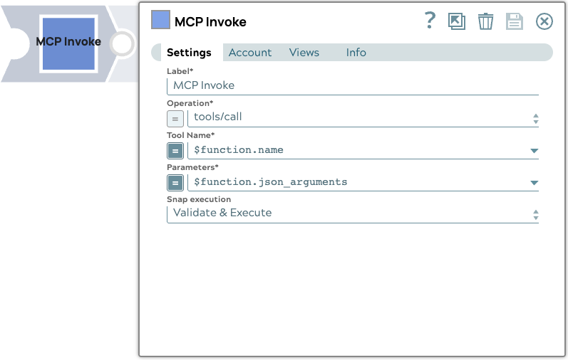

MCP Invoke
The MCP Invoke Snap is a Snap to perform operations such as calling a tool, listing resources, and reading resources to get results on an MCP server.

Prerequisites
- A valid MCP SSE Account with required fields provided.
Snap views
| View | Description | Examples of upstream and downstream snaps |
|---|---|---|
| Input | The Snap supports a maximum of one document input view. | |
| Output | This Snap supports exactly two document output views.
|
|
| Error | Error handling is a generic way to handle errors without losing data or failing the Snap execution. You can handle the errors that the Snap might encounter when running the pipeline by choosing on eof the following options from the When errors occur list under the Views tab. The available options are:
|
|
Snap settings
Legend:
- Expression icon(): Allows using JavaScript syntax to access SnapLogic Expressions to set field values dynamicall (if enabled). If disabled, you can provide a static value. Learn more.
- SnapGPT (
 ): Generates SnapLogic Expressions based on natural language using SnapGPT. Learn more.
): Generates SnapLogic Expressions based on natural language using SnapGPT. Learn more. - Suggestion icon (): Populates a list of values dynamically based on your Snap configuration. You can select only one attribute at a time using the icon. Type into the field if it supports a comma-separated list of values.
- Upload (): Uploads files. Learn more.
| Field / Field set | Type | Description |
|---|---|---|
| Label | String | Required. Specify a unique name for the Snap. Modify this to be more appropriate, esepcially if more than one of the same Snaps is in the pipeline. Default value: MCP Invoke Example: Firecrawl MCP Server |
| Operation | String/Expression | Required. Specify the operation to perform for the current input. Operation can be one of tools/call, resources/read, or resources/list. The operation is provided within the sl_metadata if used with the MCP Function Generator Snap.Default value: tools/call |
| Tool Name | String/Expression | The name of the tool to be called. Enabled if the "Operation" is tools/call or is an expression.Example: $function.name |
| Parameters | String/Expression | The "tool call" or "read resource" parameters to be used for the operation. Enabled if the "Operation" is tools/call, resources/read, or is an expression.Example: $function.json_arguments |